谢 翔
M.Sc. Candidate, Geoinformatics Engineering
Politecnico di Milano · 2025—2027
Bridging geospatial intelligence and autonomous systems — building data infrastructure for the low-altitude economy.
I am a first-year M.Sc. student in Geoinformatics Engineering at Politecnico di Milano, with a B.Eng. in Transportation Engineering. My work sits at the intersection of geospatial data science, multi-source IoT data fusion, and autonomous systems — building structured, trustworthy information layers that machines can rely on.
I am the first author of the Location Prior Generation Framework (LPGF), a quality-gated data fusion pipeline for low-altitude air mobility, currently under review at IEEE TITS. I have also led a national-level research project on urban travel behavior analysis (559K POI records), built a full-stack WebGIS platform for air quality monitoring in Portugal, and hold three invention patents.
I am an Erasmus+ scholarship recipient, an avid open-source contributor, and a multi-genre gamer who thinks about system design even when off the clock.
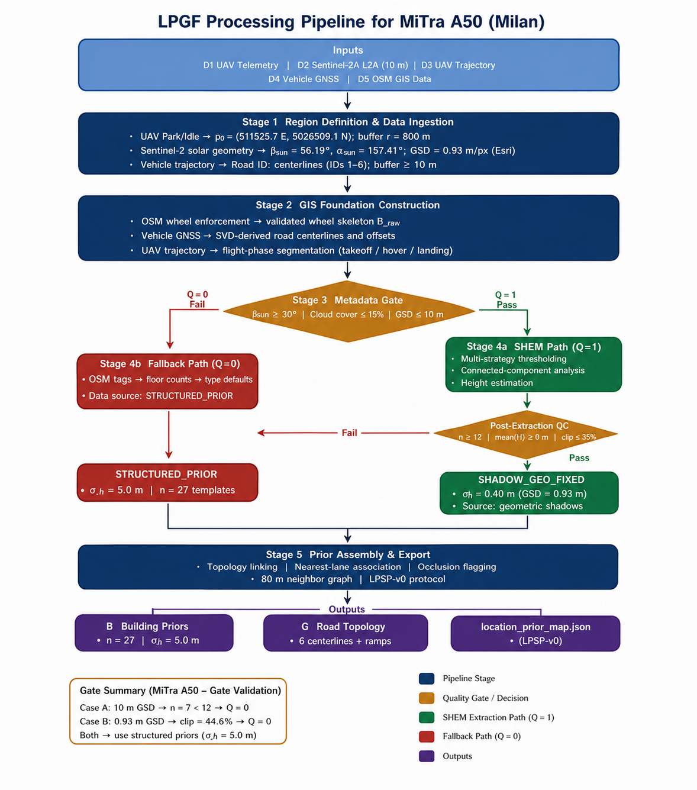
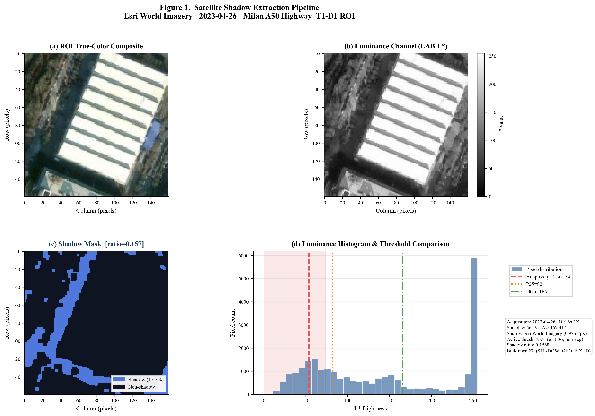
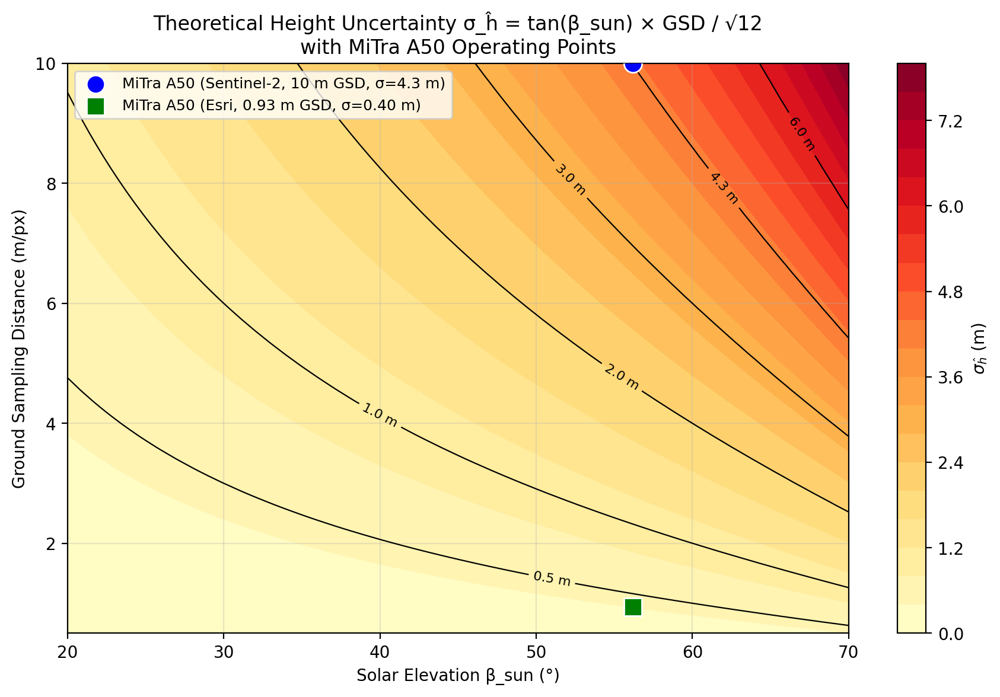
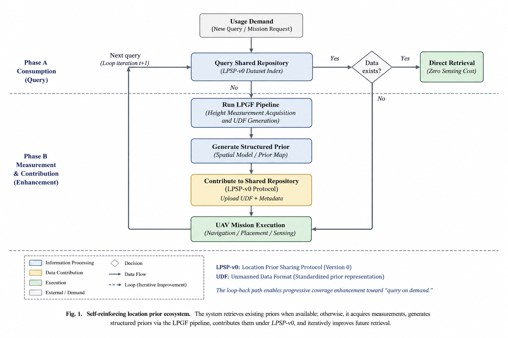
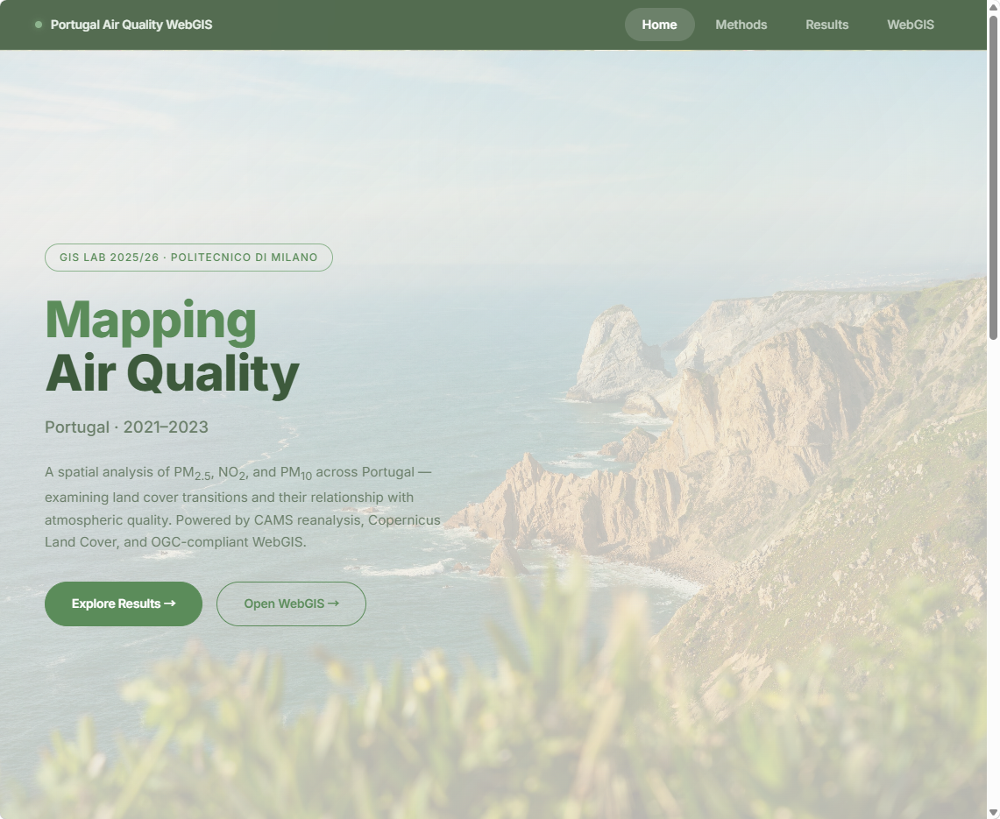
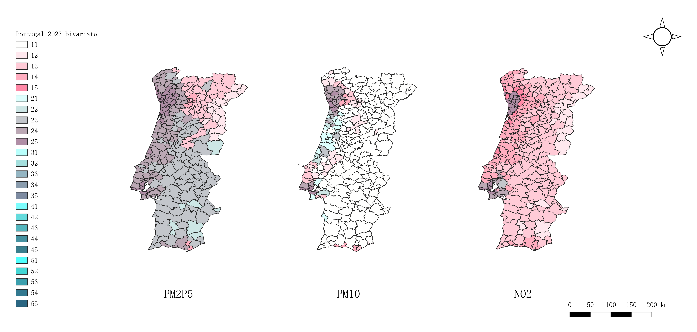
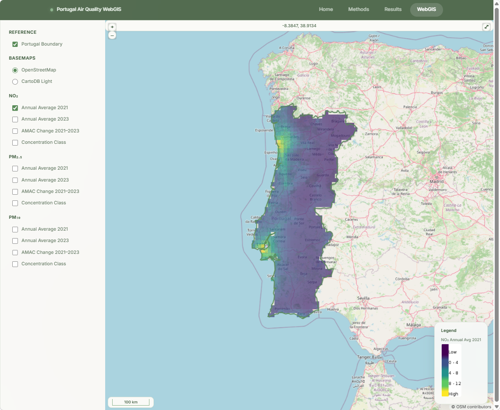
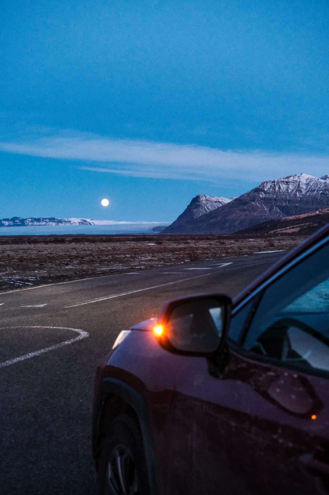
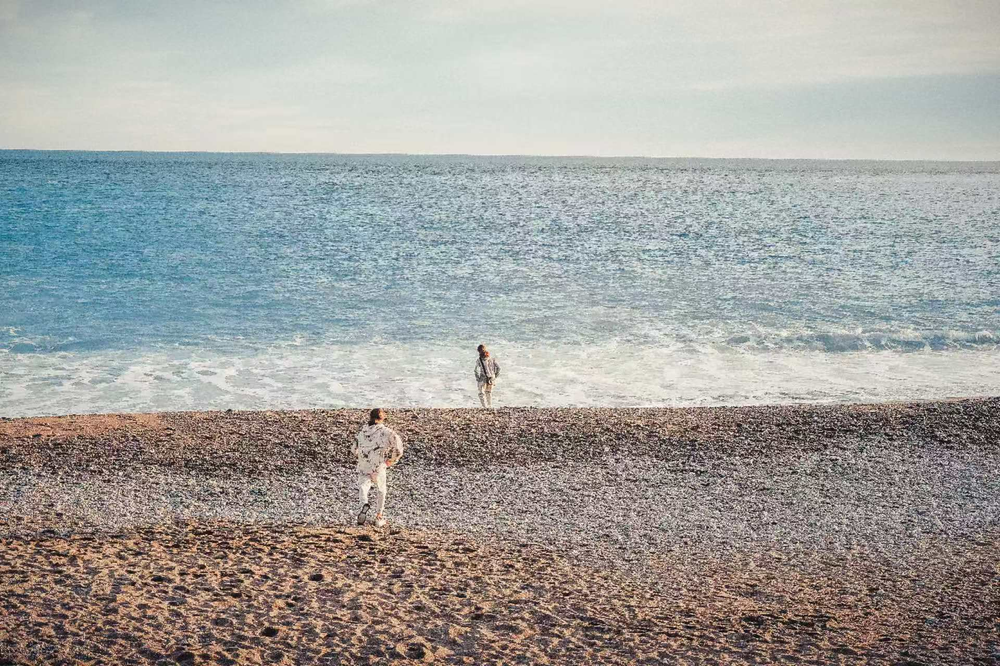
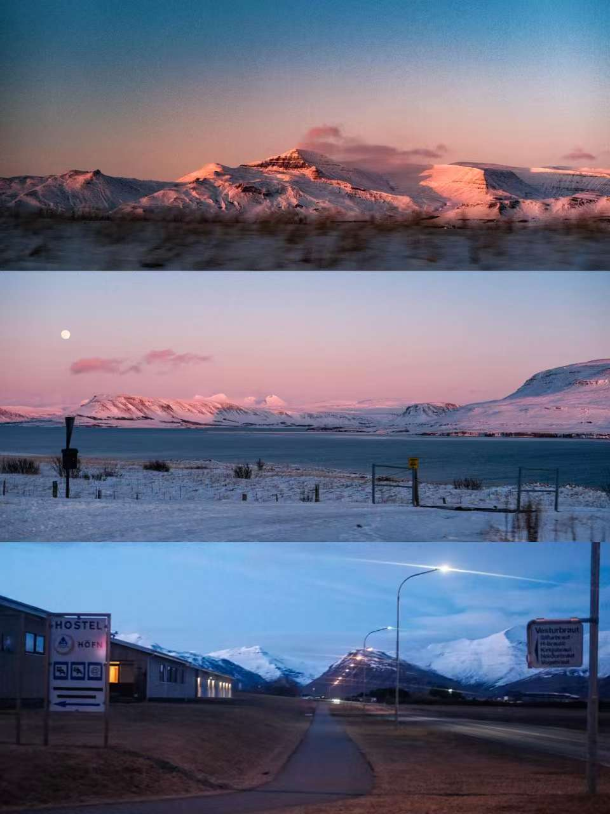
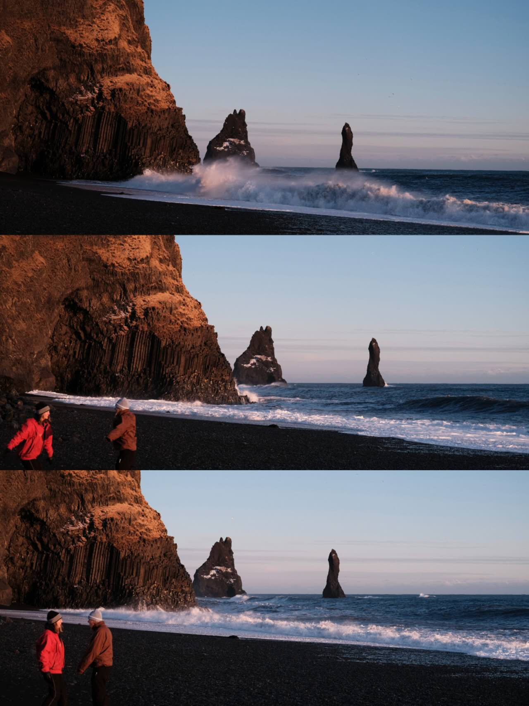
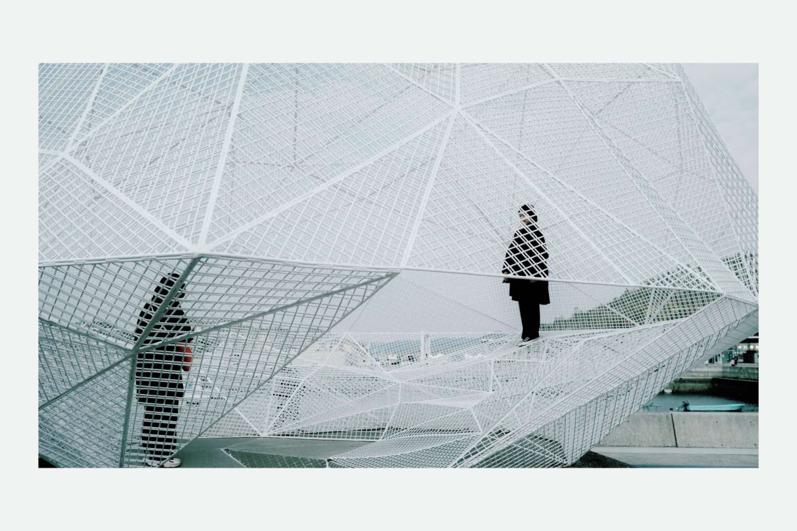
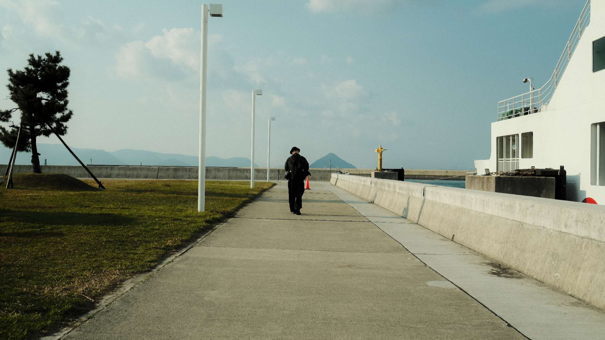